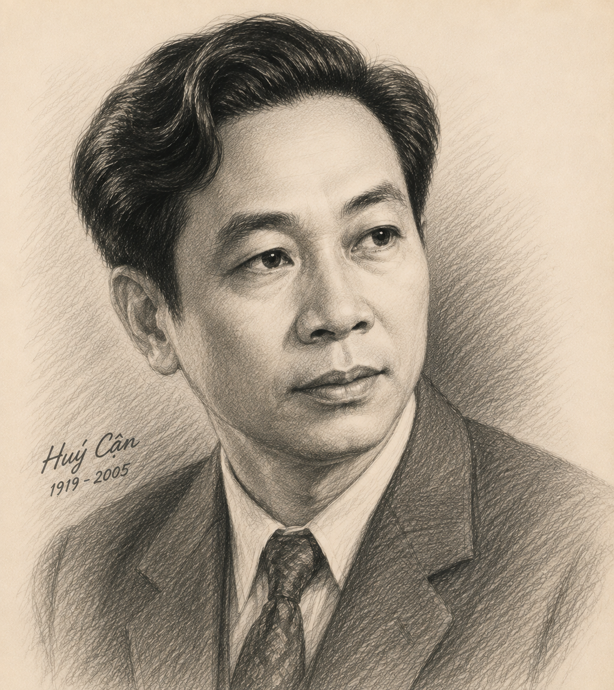

"Theo bạn, vì sao người đọc lại có thể rung động trước bài thơ được viết bởi một người xa lạ, có những trải nghiệm khác biệt với mình? Bạn có cho rằng cảnh trời đất mênh mông trong buổi chiều tà thường có một ý nghĩa đặc biệt đối với tâm hồn của mỗi người? Hãy đọc một số câu thơ mà bạn biết nói về cảnh ấy, thời điểm ấy."
Tên khai sinh & Quê hương:
Tên khai sinh là Cù Huy Cận, quê ở xã Ân Phú, huyện Vũ Quang, tỉnh Hà Tĩnh.
Vị trí & Phong cách nghệ thuật:
Các tập thơ chính:
Lửa thiêng (1940), Trời mỗi ngày lại sáng (1958), Đất nở hoa (1960), Bài thơ cuộc đời (1963), Hai bàn tay em (1967), Ngôi nhà giữa nắng (1978), Hạt lại gieo (1984), Nước triều đông (1994)...

Hình 1: Nhà thơ Huy Cận (h1.png)Hoàn cảnh sáng tác: Cảm hứng được khơi dậy từ những buổi chiều tác giả đứng ngắm cảnh sông Hồng mênh mang ở vùng Chèm - Vẽ vào mùa thu năm 1939.
Tên gọi nguyên thủy: Bài thơ ban đầu mang tên "Chiều trên sông" và định viết theo thể lục bát, sau chuyển sang thể 7 chữ và đặt tên là "Tràng giang".
Xuất xứ: Rút trong tập thơ đầu tay Lửa thiêng (1940).
Lời đề từ: "Bâng khuâng trời rộng nhớ sông dài." (Thâu tóm trọn vẹn cảm hứng chủ đạo của bài thơ về không gian và tâm trạng).
❓ Câu 1 (Trang 59): Chú ý điều được gợi mở từ câu thơ đề từ "Bâng khuâng trời rộng nhớ sông dài".
Trả lời: Lời đề từ hé mở cặp quan hệ không gian - tâm trạng: "trời rộng - sông dài" (ngoại cảnh vũ trụ mênh mông) đối diện với "bâng khuâng - nhớ" (nội tâm mơ màng, cô đơn, khắc khắc hoài vọng của cái tôi trữ tình).
❓ Câu 2 (Trang 59): Hình ảnh xuất hiện ở câu cuối khổ 1 "Củi một cành khô lạc mấy dòng" gợi cảm nhận gì?
Trả lời: Hình ảnh "củi một cành khô" là một sự sáng tạo đầy tính hiện đại và biểu tượng. Nó gợi lên sự nhỏ bé, gầy guộc, bơ vơ, vô định của kiếp người nhỏ bé cô đơn bị quăng quật giữa dòng đời vô tận.
❓ Câu 3 (Trang 59): Thế nào là "sâu chót vót"?
Trả lời: "Sâu chót vót" là sự kết hợp từ độc đáo chuyển đổi cảm giác. Tác giả không dùng "cao chót vót" mà dùng "sâu" để thể hiện bầu trời reflected xuống lòng sông, tạo nên một khoảng không thăm thẳm cả về chiều cao lẫn chiều sâu, nhân đôi sự thăm thẳm cô đơn.
❓ Câu 4 (Trang 59): Chú ý đặc điểm chính tả và ngữ âm của từ láy "dợn dợn".
Trả lời: Từ láy "dợn dợn" (biến thể ngữ âm của "rợn rợn") vừa diễn tả những làn sóng nhẹ lăn tăn trên mặt nước, vừa thể hiện sự run rẩy, rùng mình của tâm hồn tác giả trước cái bao la hoang vắng của đất trời.
| Khổ thơ | Hình ảnh không gian & Cảnh vật | Cấu tứ & Tâm trạng thi nhân |
|---|---|---|
| Khổ 1 | Sóng gợn, thuyền xuôi mái, nước song song, củi một cành khô trôi lạc. | Cấu tứ động - tĩnh; Nỗi sầu chia ly, mên man, sự lênh đênh trôi dạt của kiếp người. |
| Khổ 2 | Lơ thơ cồn nhỏ, gió đìu hiu, chợ chiều tan, nắng xuống trời lên "sâu chót vót". | Cấu tứ mở rộng không gian 3 chiều; Nỗi cô đơn tuyệt đối trước vũ trụ hoang sơ. |
| Khổ 3 | Bèo dạt hàng nối hàng, không đò ngang, không cầu, bờ xanh tiếp bãi vàng. | Cấu tứ phủ định sự kết nối; Khao khát tình người, tình đời trong sự vô vọng. |
| Khổ 4 | Mây cao đùn núi bạc, chim nghiêng cánh nhỏ, sóng dợn hoàng hôn. | Cấu tứ cổ điển kết hợp hiện đại; Nỗi nhớ quê hương tha thiết, tình yêu nước thầm kín. |
Câu 1: Cảm nhận về nhan đề "Tràng giang" và mối liên hệ với lời đề từ?
- Nhan đề "Tràng giang" dùng hai từ Hán Việt có điệp âm "ang" tạo cảm giác về một con sông không chỉ dài mà còn rất rộng lớn, cổ kính, mênh mông.
- Lời đề từ "Bâng khuâng trời rộng nhớ sông dài" đóng vai trò là chiếc chìa khóa định hướng cảm xúc, tạo sự hòa hợp giữa khung cảnh thiên nhiên kỳ vĩ và tâm trạng bơ vơ của con người.
Câu 2: Những từ ngữ chỉ tính chất của khung cảnh được vẽ ra trong bài thơ?
- Các từ ngữ chỉ tính chất: Mênh mông, hiu quạnh, lơ thơ, đìu hiu, cô liêu, vắng lặng, bơ vơ, trôi dạt.
- Bức tranh sông nước mang vẻ đẹp cổ điển nhưng đượm nỗi sầu u buồn của thời đại Thơ mới.
Câu 3: Bài thơ được cấu tứ như thế nào và căn cứ xác định?
- Cấu tứ bài thơ dựa trên sự đối lập gay gắt giữa vũ trụ vô biên, vĩnh hằng với kiếp người nhỏ bé, hữu hạn, trôi dạt.
- Căn cứ: Sự mở rộng không gian từ sóng dòng sông đến cồn cát, bầu trời, rặng mây, kết hợp các hình ảnh đơn độc (cành củi khô, con thuyền, cánh chim đơn độc).
Câu 4: Sự tương phản trong khổ 2 và ý nghĩa triển khai ở các khổ tiếp theo?
- Khổ 2 tương phản giữa "nắng xuống" (chuyển động dọc xuống) với "trời lên" (mở rộng lên cao) $\rightarrow$ tạo nên khoảng không "sâu chót vót" cô liêu.
- Sự tương phản tiếp tục triển khai ở khổ 3 (không cầu, không đò $\xrightleftharpoons$ bờ xanh bãi vàng) và khổ 4 (mây đùn hùng vĩ $\xrightleftharpoons$ cánh chim nhỏ bé nghiêng chao).
Câu 5: Những điểm khác lạ trong cách sử dụng ngôn ngữ bài thơ?
- Ví dụ tiêu biểu: Cụm từ "sâu chót vót" và cách dùng từ đảo trật tự "Củi một cành khô".
- Tác dụng: Tạo nên hiệu ứng thị giác và cảm giác mới lạ, phá vỡ quy phạm thông thường để diễn tả chiều sâu tâm trạng của nhà thơ hiện đại.
Câu 6: Các thi liệu truyền thống xuất hiện trong văn bản và tác dụng?
- Thi liệu truyền thống: Tràng giang, con thuyền xuôi mái, bèo dạt, mây đùn núi bạc, chim nghiêng cánh nhỏ, khói hoàng hôn (gợi nhớ câu thơ Đường của Thôi Hiệu: "Yên ba giang thượng sử nhân sầu").
- Tác dụng: Tạo nên không khí Đường thi trang trọng, cổ kính nhưng lại tải chở nỗi sầu nhân thế rất hiện đại.
Câu 7: Yếu tố tượng trưng trong bài thơ Tràng giang?
- Tràng giang giàu tính tượng trưng vì mỗi hình ảnh thiên nhiên (cành củi khô, dòng nước, cánh chim) không chỉ là cảnh thật mà còn tượng trưng cho kiếp người bơ vơ, mất phương hướng trong xã hội cũ.
Câu 8: Cảm nhận về mối quan hệ giữa con người cá nhân với vũ trụ vô biên?
- Bài thơ thức tỉnh trong ta nhận thức về sự hữu hạn của đời người trước cái vô hạn của vũ trụ, từ đó trân trọng hơn tình yêu quê hương, đất nước và sự kết nối giữa con người với con người.
"Viết đoạn văn (khoảng 150 chữ) bày tỏ sự tâm đắc của bạn về một phương diện nổi bật của bài thơ Tràng giang."
Đoạn văn tham khảo (Về sự kết hợp hài hòa giữa cổ điển và hiện đại):
Điều làm tôi tâm đắc nhất ở bài thơ "Tràng giang" của Huy Cận chính là sự kết hợp nhuần nhuyễn giữa vẻ đẹp cổ điển và tinh thần hiện đại. Chất cổ điển thấm đượm qua thể thơ thất ngôn trang trọng, cách dùng từ Hán Việt "Tràng giang", cùng các thi liệu Đường thi quen thuộc như sóng nước, mây đùn, cánh chim chiều và bóng hoàng hôn. Thế nhưng, đằng sau bức tranh sơn thủy ấy lại là một cái "tôi" Thơ mới vô cùng hiện đại. Tác giả đã đưa vào bài thơ những hình ảnh rất thực, mộc mạc như "củi một cành khô", "chợ chiều đã tan", và sáng tạo nên những cụm từ mới lạ như "sâu chót vót". Khác với người xưa nhìn thiên nhiên để tìm sự quy ẩn, Huy Cận đứng trước tràng giang để bộc lộ nỗi sầu cô đơn của một trí thức yêu nước tha thiết. Sự giao thoa tài tình ấy đã tạo nên một kiệt tác thơ ca sống mãi với thời gian.
Mối liên hệ giữa câu thơ kết bài "Không khói hoàng hôn cũng nhớ nhà" với ý thơ của Thôi Hiệu trong bài Hoàng Hạc Lâu: "Yên ba giang thượng sử nhân sầu" (Khói sóng trên sông khiến người buồn). Huy Cận đã đẩy nỗi nhớ quê hương lên mức độ tự phát, tha thiết hơn mà không cần tác nhân "khói sóng".
Phân tích nghệ thuật đối lập trong không gian thơ Huy Cận (rộng lớn $\xrightleftharpoons$ nhỏ bé) để áp dụng vào các bài tập làm văn nghị luận về thơ trữ tình lãng mạn Việt Nam 1930 - 1945.
Cần phân biệt nỗi sầu trong "Tràng giang" không phải là sự bế tắc tiêu cực, mà là "nỗi sầu vũ trụ" xuất phát từ tấm lòng yêu đời, yêu quê hương đất nước thầm kín của một người trẻ tuổi trước thời cuộc.
10 câu hỏi trắc nghiệm củng cố kiến thức (Mức độ Nhận biết, Thông hiểu, Vận dụng)
Bài 1: Phân tích hiệu quả nghệ thuật của phép đối lập giữa "Chim nghiêng cánh nhỏ" và "bóng chiều sa" cùng "lớp lớp mây cao" ở khổ thơ cuối.
Lời giải chi tiết:
- Phân tích hình ảnh: "Mây cao đùn núi bạc" gợi không gian vũ trụ siêu việt, hoành tráng. Đối lập hoàn toàn với đó là "cánh chim nhỏ" nghiêng chao trong ánh chiều tà.
- Tác dụng: Phép tương phản cực đại giữa cái vô tận của thiên nhiên và cái nhỏ bé của kiếp sống đã làm nổi bật cảm giác cô đơn, rợn ngợp của cái "tôi" trữ tình.
- Đồng thời, bóng chiều đè nặng lên cánh chim nhỏ bé cũng chính là gánh nặng tâm sự đất nước đang đè nặng lên vai người trí thức trẻ.
Bài 2: Tính toán chỉ số tần suất xuất hiện của các từ ngữ chỉ sự phủ định, chia ly trong toàn bộ bài thơ và rút ra nhận xét.
Lời giải chi tiết:
- Thống kê từ ngữ phủ định & chia ly: buồn (2), song song (1), sầu (1), lạc (1), đìu hiu (1), đâu (1), cô liêu (1), dạt (1), không (2), lặng lẽ (1), không khói (1).
- Tổng số từ biểu đạt sự chia ly/phủ định: khoảng 13 từ/phần xuất hiện trên tổng số 112 từ của bài thơ (chiếm tỉ lệ xấp xỉ \(11.6\%\)).
- Nhận xét: Tần suất từ ngữ phủ định cao liên tục củng cố cấu tứ bài thơ, xoáy sâu nỗi cô đơn không cách nào khỏa lấp của nhà thơ trước vũ trụ.
Bài 3: So sánh cảm hứng "nhớ nhà/nhớ quê" giữa Tràng giang (Huy Cận) và Nhớ đồng (Tố Hữu) để thấy nét đặc sắc riêng của từng tác giả.
Lời giải chi tiết:
- Trong Tràng giang (Huy Cận): Nỗi nhớ nhà là "lòng quê dợn dợn", là tình yêu quê hương đất nước ẩn náu dưới hình thức nỗi sầu vũ trụ của một cái "tôi" lãng mạn Thơ mới chưa tìm thấy hướng đi.
- Trong Nhớ đồng (Tố Hữu): Nỗi nhớ quê hương gắn liền với hình ảnh con người lao động dãi nắng dầm mưa và nhiệt huyết giác ngộ lý tưởng cách mạng của người chiến sĩ cộng sản trong tù.
- Kết luận: Cả hai bài thơ đều thể hiện tình yêu quê hương đất nước tha thiết nhưng mang hai sắc thái thẩm mỹ độc đáo riêng biệt của hai dòng thơ.